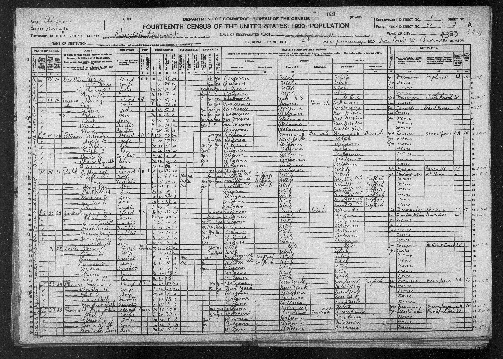

| Line | Name as written | Relationship | Sex | Color | Age | Marital condition | Birthplace | Father birthplace | Mother birthplace | Occupation | Industry | Employment | |---|---|---|---|---|---|---|---|---|---|---|---|---| | 19 | Webb, J. Henry H. [last initial uncertain] | Head | M | W | 33 | M | Arizona | Missouri | Utah | Sawyer | Sawmill | OA | | 20 | — Della R | Wife | F | W | 28 | M | Mexico cit | Utah | Utah | Dressmaker | at Home | W | | 21 | — Thora | Daughter | F | W | 10 | S | Mexico cit | Utah | Mexico cit | none | [blank] | [blank] | | 22 | — Henry Ray | Son | M | W | 8 | S | Mexico cit | Utah | Mexico cit | none | [blank] | [blank] | | 23 | — Carl Albert | Son | M | W | 5 | S | Arizona | Utah | Mexico cit | none | [blank] | [blank] | | 24 | — Maurice E | Son | M | W | 3 4/12 | S | Arizona | Utah | Mexico cit | none | [blank] | [blank] | | 25 | — Junius E | Son | M | W | 1 8/12 | S | Arizona | Utah | Mexico cit | none | [blank] | [blank] | | 26 | — Gwen | Daughter | F | W | 2/12 | S | Arizona | Utah | Mexico cit | none | [blank] | [blank] | Additional columns: household owns home (`O`), free of mortgage (`F`). Della, Thora and Henry Ray immigration year `1913`; Della and Thora naturalization column appears `no`, Henry Ray cell blank. Naturalization-year column blank for all. Della reads `yes`, writes `yes`, speaks English `yes`. Thora attended school `yes`, reads `yes`, writes `yes`; Henry Ray attended school `yes`. Henry reads/writes/speaks English `yes`. Mother-tongue cells associated with Mexico entries read `English`; native-born persons' corresponding cells blank. No farm-schedule number entered for Webb household. Marginal occupational classification numbers are administrative annotations and remain visible in the original; not transcribed here.